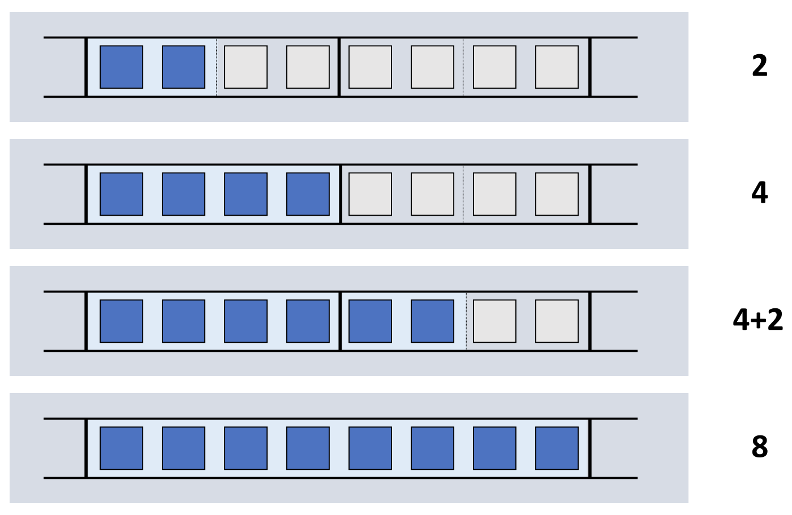
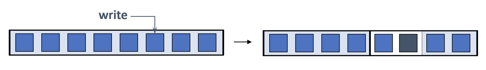

<!DOCTYPE html>
<html><head><title>20. Superpage</title><meta charSet="utf-8"/><meta name="viewport" content="width=device-width, initial-scale=1.0"/><meta property="og:title" content="20. Superpage"/><meta property="og:description" content="서울대학교 컴퓨터공학과 김진수 교수님의 &amp;quot;고급 운영체제&amp;quot; 강의를 필기한 내용입니다. 다소 잘못된 내용과 구어적 표현 이 포함되어 있을 수 있습니다. Superpage § Superpage 말고 Hugepage 라고 용어를 사용하기도 하는데 이것은 linux-specific 용어인듯."/><meta property="og:image" content="https://mdg.haeramk.im/static/og-image.png"/><meta property="og:width" content="1200"/><meta property="og:height" content="675"/><link rel="icon" href="../../../../../static/icon.png"/><meta name="description" content="서울대학교 컴퓨터공학과 김진수 교수님의 &amp;quot;고급 운영체제&amp;quot; 강의를 필기한 내용입니다. 다소 잘못된 내용과 구어적 표현 이 포함되어 있을 수 있습니다. Superpage § Superpage 말고 Hugepage 라고 용어를 사용하기도 하는데 이것은 linux-specific 용어인듯."/><meta name="generator" content="Quartz"/><link rel="preconnect" href="https://fonts.googleapis.com"/><link rel="preconnect" href="https://fonts.gstatic.com"/><link href="../../../../../index.css" rel="stylesheet" type="text/css" spa-preserve/><link href="https://cdn.jsdelivr.net/npm/katex@0.16.0/dist/katex.min.css" rel="stylesheet" type="text/css" spa-preserve/><link href="https://fonts.googleapis.com/css2?family=IBM Plex Mono&amp;family=Gowun Batang:wght@400;700&amp;family=Gowun Dodum:ital,wght@0,400;0,600;1,400;1,600&amp;display=swap" rel="stylesheet" type="text/css" spa-preserve/><script src="../../../../../prescript.js" type="application/javascript" spa-preserve></script><script type="application/javascript" spa-preserve>const fetchData = fetch(`../../../../../static/contentIndex.json`).then(data => data.json())</script></head><body data-slug="gardens/os/originals/aos.spring.2024.cse.snu.ac.kr/lectures/20.-Superpage"><div id="quartz-root" class="page"><div id="quartz-body"><div class="left sidebar"><h1 class="page-title "><a href="../../../../..">Madison Digital Garden</a></h1><div class="spacer mobile-only"></div><div class="search "><div id="search-icon"><p>Search</p><div></div><svg tabIndex="0" aria-labelledby="title desc" role="img" xmlns="http://www.w3.org/2000/svg" viewBox="0 0 19.9 19.7"><title id="title">Search</title><desc id="desc">Search</desc><g class="search-path" fill="none"><path stroke-linecap="square" d="M18.5 18.3l-5.4-5.4"></path><circle cx="8" cy="8" r="7"></circle></g></svg></div><div id="search-container"><div id="search-space"><input autocomplete="off" id="search-bar" name="search" type="text" aria-label="Search for something" placeholder="Search for something"/><div id="results-container"></div></div></div></div><div class="darkmode "><input class="toggle" id="darkmode-toggle" type="checkbox" tabIndex="-1"/><label id="toggle-label-light" for="darkmode-toggle" tabIndex="-1"><svg xmlns="http://www.w3.org/2000/svg" xmlnsXlink="http://www.w3.org/1999/xlink" version="1.1" id="dayIcon" x="0px" y="0px" viewBox="0 0 35 35" style="enable-background:new 0 0 35 35;" xmlSpace="preserve"><title>Light mode</title><path d="M6,17.5C6,16.672,5.328,16,4.5,16h-3C0.672,16,0,16.672,0,17.5    S0.672,19,1.5,19h3C5.328,19,6,18.328,6,17.5z M7.5,26c-0.414,0-0.789,0.168-1.061,0.439l-2,2C4.168,28.711,4,29.086,4,29.5    C4,30.328,4.671,31,5.5,31c0.414,0,0.789-0.168,1.06-0.44l2-2C8.832,28.289,9,27.914,9,27.5C9,26.672,8.329,26,7.5,26z M17.5,6    C18.329,6,19,5.328,19,4.5v-3C19,0.672,18.329,0,17.5,0S16,0.672,16,1.5v3C16,5.328,16.671,6,17.5,6z M27.5,9    c0.414,0,0.789-0.168,1.06-0.439l2-2C30.832,6.289,31,5.914,31,5.5C31,4.672,30.329,4,29.5,4c-0.414,0-0.789,0.168-1.061,0.44    l-2,2C26.168,6.711,26,7.086,26,7.5C26,8.328,26.671,9,27.5,9z M6.439,8.561C6.711,8.832,7.086,9,7.5,9C8.328,9,9,8.328,9,7.5    c0-0.414-0.168-0.789-0.439-1.061l-2-2C6.289,4.168,5.914,4,5.5,4C4.672,4,4,4.672,4,5.5c0,0.414,0.168,0.789,0.439,1.06    L6.439,8.561z M33.5,16h-3c-0.828,0-1.5,0.672-1.5,1.5s0.672,1.5,1.5,1.5h3c0.828,0,1.5-0.672,1.5-1.5S34.328,16,33.5,16z     M28.561,26.439C28.289,26.168,27.914,26,27.5,26c-0.828,0-1.5,0.672-1.5,1.5c0,0.414,0.168,0.789,0.439,1.06l2,2    C28.711,30.832,29.086,31,29.5,31c0.828,0,1.5-0.672,1.5-1.5c0-0.414-0.168-0.789-0.439-1.061L28.561,26.439z M17.5,29    c-0.829,0-1.5,0.672-1.5,1.5v3c0,0.828,0.671,1.5,1.5,1.5s1.5-0.672,1.5-1.5v-3C19,29.672,18.329,29,17.5,29z M17.5,7    C11.71,7,7,11.71,7,17.5S11.71,28,17.5,28S28,23.29,28,17.5S23.29,7,17.5,7z M17.5,25c-4.136,0-7.5-3.364-7.5-7.5    c0-4.136,3.364-7.5,7.5-7.5c4.136,0,7.5,3.364,7.5,7.5C25,21.636,21.636,25,17.5,25z"></path></svg></label><label id="toggle-label-dark" for="darkmode-toggle" tabIndex="-1"><svg xmlns="http://www.w3.org/2000/svg" xmlnsXlink="http://www.w3.org/1999/xlink" version="1.1" id="nightIcon" x="0px" y="0px" viewBox="0 0 100 100" style="enable-background='new 0 0 100 100'" xmlSpace="preserve"><title>Dark mode</title><path d="M96.76,66.458c-0.853-0.852-2.15-1.064-3.23-0.534c-6.063,2.991-12.858,4.571-19.655,4.571  C62.022,70.495,50.88,65.88,42.5,57.5C29.043,44.043,25.658,23.536,34.076,6.47c0.532-1.08,0.318-2.379-0.534-3.23  c-0.851-0.852-2.15-1.064-3.23-0.534c-4.918,2.427-9.375,5.619-13.246,9.491c-9.447,9.447-14.65,22.008-14.65,35.369  c0,13.36,5.203,25.921,14.65,35.368s22.008,14.65,35.368,14.65c13.361,0,25.921-5.203,35.369-14.65  c3.872-3.871,7.064-8.328,9.491-13.246C97.826,68.608,97.611,67.309,96.76,66.458z"></path></svg></label></div></div><div class="center"><div class="page-header"><div class="popover-hint"><h1 class="article-title ">20. Superpage</h1><p class="content-meta ">May 23, 2024, 11 min read</p><ul class="tags "><li><a href="../../../../../tags/originals" class="internal tag-link">#originals</a></li><li><a href="../../../../../tags/snu-aos24s" class="internal tag-link">#snu-aos24s</a></li></ul></div></div><article class="popover-hint"><blockquote class="callout" data-callout="info">
<div class="callout-title">
                  <div class="callout-icon"><svg xmlns="http://www.w3.org/2000/svg" width="100%" height="100%" viewBox="0 0 24 24" fill="none" stroke="currentColor" stroke-width="2" stroke-linecap="round" stroke-linejoin="round"><circle cx="12" cy="12" r="10"></circle><line x1="12" y1="16" x2="12" y2="12"></line><line x1="12" y1="8" x2="12.01" y2="8"></line></svg></div>
                  <div class="callout-title-inner"><p>서울대학교 컴퓨터공학과 김진수 교수님의 &quot;고급 운영체제&quot; 강의를 필기한 내용입니다. </p></div>
                  
                </div>
</blockquote>
<blockquote class="callout" data-callout="warning">
<div class="callout-title">
                  <div class="callout-icon"><svg xmlns="http://www.w3.org/2000/svg" width="100%" height="100%" viewBox="0 0 24 24" fill="none" stroke="currentColor" stroke-width="2" stroke-linecap="round" stroke-linejoin="round"><path d="m21.73 18-8-14a2 2 0 0 0-3.48 0l-8 14A2 2 0 0 0 4 21h16a2 2 0 0 0 1.73-3Z"></path><line x1="12" y1="9" x2="12" y2="13"></line><line x1="12" y1="17" x2="12.01" y2="17"></line></svg></div>
                  <div class="callout-title-inner"><p>다소 잘못된 내용과 구어적 표현 이 포함되어 있을 수 있습니다. </p></div>
                  
                </div>
</blockquote>
<h2 id="superpage">Superpage<a aria-hidden="true" tabindex="-1" href="#superpage" class="internal"> §</a></h2>
<ul>
<li>Superpage 말고 Hugepage 라고 용어를 사용하기도 하는데 이것은 linux-specific 용어인듯.</li>
</ul>
<h3 id="superpage-basepage">Superpage, Basepage<a aria-hidden="true" tabindex="-1" href="#superpage-basepage" class="internal"> §</a></h3>
<ul>
<li><em>Basepage</em>: 원래의 page 사이즈 (4Ki)</li>
<li><em>Superpage</em> 는 basepage 보다 사이즈가 크다는 것 이외에는 동일
<ul>
<li><span class="math math-inline"><span class="katex"><span class="katex-html" aria-hidden="true"><span class="base"><span class="strut" style="height:0.6644em;"></span><span class="mord"><span class="mord">2</span><span class="msupsub"><span class="vlist-t"><span class="vlist-r"><span class="vlist" style="height:0.6644em;"><span style="top:-3.063em;margin-right:0.05em;"><span class="pstrut" style="height:2.7em;"></span><span class="sizing reset-size6 size3 mtight"><span class="mord mtight"><span class="mord mathnormal mtight">n</span></span></span></span></span></span></span></span></span></span></span></span></span> 크기</li>
<li>TLB 하나 차지</li>
<li>Physical 에서나 virtual 에서나 모두 연속된 공간</li>
<li>경계에 맞아야 된다 (align)
<ul>
<li>뭔지 알제? 안맞으면 superpage 로 묶을 수 없는 애매한 공간이 생겨벌임</li>
</ul>
</li>
<li>Superpage 가 하나의 page 로 취급되기 때문에 전체에 대해 하나의 reference, dirty, protection 세트를 가진다
<ul>
<li>Superpage 내의 basepage 를 따로 취급할 수는 없다 이거야</li>
</ul>
</li>
</ul>
</li>
<li>Superpage 를 basepage 로 사용하는 경우 - basepage 사이즈를 그냥 키워버리는 경우
<ul>
<li>당연히 internal fragmentation 이 늘어나니까 안된다</li>
<li>swap 의 상황에서 IO amplification 이 발생
<ul>
<li>데이터의 일부분만 바뀌었는데 큰 크기의 page 전부가 디스크로 내려간다.</li>
</ul>
</li>
</ul>
</li>
<li>이게 필요한 이유는 TLB coverage 때문
<ul>
<li>TLB 의 특혜를 받을 수 있는 physical frame 들이 너무나도 적더라</li>
</ul>
</li>
<li>Superpage 는 arch 눈치를 봐야 한다
<ul>
<li>앞서 말한것 처럼 page table 의 구조는 arch-specific 하고, 이 page table 의 구조가 superpage 지원과 연관있기 때문에 당연히 arch 눈치를 봐야 한다.</li>
<li>x86_64 에서는 page table lv 없애는 식으로 2MB, 1GB superpage 구현</li>
<li>ARM 의 경우에는 임베디드에서 많이 사용되다 보니까 반대로 작은 사이즈의 page 를 제공한다.</li>
</ul>
</li>
<li>이전에는 user 가 직접 superpage 를 요청할 수 있었다.
<ul>
<li>superpage 요청 인터페이스를 제공</li>
<li>그래서 프로그래머가 코드를 짤 때 superpage 가 필요하면 명시적으로 요청하도록 했다 (뭐 mmap arg 같은걸로)</li>
<li>하지만 유저는 이것을 모르게 (transparency) 하기 위해 기각</li>
</ul>
</li>
</ul>
<h3 id="concerns-for-superpage">Concerns for superpage<a aria-hidden="true" tabindex="-1" href="#concerns-for-superpage" class="internal"> §</a></h3>
<ul>
<li>Issue 1: <em>Superpage allocation</em>
<ul>
<li><em>Relocation based</em>: virtual memory 상의 연속된 공간에 대한 page 할당을 그냥 막 physical page 를 할당해 준 뒤 나중에 superpage 사이즈가 되면 복사해서 물리적으로 연속되고 경계에 맞게 합치기
<ul>
<li>당연히 복사 overhead 가 있다</li>
</ul>
</li>
<li><em>Reservation-based</em>: 나중에 superpage 로 합쳐질 것을 고려하여 해당 공간을 미리 예약해놓고 page fault 가 나면 예약된 공간에 넣는 것
<ul>
<li>당연히 예약 공간을 필요로 하기에 낭비가 된다</li>
</ul>
</li>
<li>이 둘 중에 어떤 것을 택해야 할 지의 issue</li>
</ul>
</li>
<li>Issue 2: <em>Promotion</em>
<ul>
<li>Basepage (혹은 작은 사이즈의 superpage) 를 큰 superpage 로 묶는 것을 <em>Promotion</em> 이라고 한다.</li>
<li>그럼 언제 superpage 로 묶을까가 issue 가 된다.
<ul>
<li>작은사이즈부터 단계적으로 묶어나갈 수도 있고</li>
<li>더 큰 사이즈가 될때까지 기다렸다가 묶을 수도 있고</li>
</ul>
</li>
<li>Physical page 를 다 할당하기 전에 묶을 수는 없다
<ul>
<li>그 전에 묶으면 다 오지도 않았는데 page table 에서는 valid bit 이 켜져 있어서 접근할 수 있다고 생각하기 때문</li>
</ul>
</li>
</ul>
</li>
<li>Issue 3: <em>Demotion</em>
<ul>
<li>Superpage 를 잘라서 다시 작게 만드는 것을 <em>Demotion</em> 이라고 한다.</li>
<li>Superpage 내에서 reference, dirty, protection 등의 attribute 를 세부적으로 관리하고자 할 때 demotion 이 필요
<ul>
<li>Write amp 줄이기 - superpage 의 일부만이 modified 되었는데 이 큰 사이즈 전체를 디스크로 내려보내는 것은 비효율적</li>
<li>Protection bit 변경 - superpage 의 부분부분이 다른 protection bit 을 가져야 한다면, 이것을 superpage 로 묶인 상태로 두면 안된다</li>
</ul>
</li>
<li>Issue 는 superpage 의 어느 부분이 자주 reference 되는지 어떻게 체크할 것이냐 이다.
<ul>
<li>덜 reference 되는 애들을 swap 해야 하기 때문</li>
</ul>
</li>
</ul>
</li>
<li>Issue 4: <em>Fragmentation</em>
<ul>
<li>여러 사이즈의 page 들을 사용하다 보면 framentation 이 생긴다.
<ul>
<li>뭐 디스크 조각 모음마냥 중간중간 hole 이 있어서 합치면 더 크게 superpage 로 묶을 수 있을텐데 싶은 아쉬운 모멘트들</li>
</ul>
</li>
<li>Swap 안하는애들이 중간에 몰려있으면 연속된 공간을 찾기 어렵기 때문에</li>
<li>Swap 안하는 커널같은 애들을 한쪽에 몰아넣기</li>
</ul>
</li>
</ul>
<h2 id="superpage-osdi02">Superpage (OSDI’02)<a aria-hidden="true" tabindex="-1" href="#superpage-osdi02" class="internal"> §</a></h2>
<h3 id="observation">Observation<a aria-hidden="true" tabindex="-1" href="#observation" class="internal"> §</a></h3>
<ul>
<li>하나의 virtual memory object 의 경우에는 얘네들이 한번에 참조되는 경우가 많더라</li>
<li>그래서 얘네의 경우에는 적극적으로 superpage 로 만들겠다</li>
</ul>
<h3 id="superpage-allocation-preemptible-reservation">Superpage Allocation: Preemptible Reservation<a aria-hidden="true" tabindex="-1" href="#superpage-allocation-preemptible-reservation" class="internal"> §</a></h3>
<ul>
<li>Superpage 를 위한 연속 공간을 확보할 때, relocation 방식이 reserve 하는 것을 기본으로 가져간다.</li>
</ul>
<h4 id="opportunistic-reservation-policy">Opportunistic reservation policy<a aria-hidden="true" tabindex="-1" href="#opportunistic-reservation-policy" class="internal"> §</a></h4>
<ul>
<li>Page fault 시에, 어느 사이즈의 superpage 가 적합할지 예측하여 reserve 한다.
<ul>
<li>Fixed size virtual memory object (code 등) 의 경우에는 원본 사이즈보다 크지 않는 최대의 supersize 크기로 reserve
<ul>
<li>당연히 사이즈가 안바뀌니까 더 많이 reserve 하면 무조건 낭비</li>
</ul>
</li>
<li>Dynamic size virtual memory object (heap 등) 의 경우에는 넘어갈 수 있게 reserve</li>
</ul>
</li>
<li>그리고 만약 이 예측이 틀리면, 나중에 조정
<ul>
<li>너무 커: 나중에 preempt 시킴</li>
<li>너무 작어: 나중에 realocation 방식으로 더 큰 superpage 로 전환</li>
</ul>
</li>
<li>참고로 Reserve 할 때에는 free frame 뿐 아니라 언제든 내보낼 수 있는 frame 도 가능하다고 한다.
<ul>
<li>가령 page cache 공간도 가능하다</li>
</ul>
</li>
</ul>
<h4 id="reserve-preemption">Reserve Preemption<a aria-hidden="true" tabindex="-1" href="#reserve-preemption" class="internal"> §</a></h4>
<ul>
<li>연속된 공간이 더 이상 없다면, 지금 reservation 되어 있는 공간을 reserve 해제해서 주겠다는 것.</li>
<li>이를 위해, reserve 되었지만 사용되지는 않은 공간을 index 로 하여 각 superpage reservation 을 관리하는 자료구조인 Reservation list 를 활용한다.</li>
</ul>
<h3 id="incremental-promotion">Incremental Promotion<a aria-hidden="true" tabindex="-1" href="#incremental-promotion" class="internal"> §</a></h3>
<p></p>
<ul>
<li>Reserve 는 max 로, 실제로 superpage 로 만드는 promotion 은 incremental 하게</li>
</ul>
<h3 id="speculative--incremental-demotion">Speculative + Incremental Demotion<a aria-hidden="true" tabindex="-1" href="#speculative--incremental-demotion" class="internal"> §</a></h3>
<ul>
<li>Speculative demotion
<ul>
<li>Memory pressure 상황에서, superpage 전체를 전부 swap 하는 것은 바보같은 짓이니 이 중에서 실제로 많이 reference 되고 있지 않은 부분만 swap 하는 것이 현명할 것이다.</li>
<li>근데 어떻게 어느 부분이 자주 reference 되고 어느 부분은 그렇지 않은지 알 수 있을까?</li>
<li>알 수가 없으니 일단 쪼갠 뒤 좀 시간을 두고 지켜보고 나중에 다시 묶자는 생각 (<em>Speculative</em>).
<ul>
<li>메모리가 부족해지면, Superpage 의 reference bit 을 끌때 얘를 아예 demotion 시켜버린다.</li>
<li>그리고 일정 시간이 지나면 몇몇 basepage 들에 대해서는 reference bit 가 다시 켜져있을 테니 얘네들만 다시 promotion 하고</li>
<li>시간이 지나도 reference bit 이 켜지지 않는 애들에 대해서는 swap out 시켜버린다.</li>
</ul>
</li>
</ul>
</li>
</ul>
<p></p>
<ul>
<li>Incremental demotion
<ul>
<li>위의 상황은 (1) swap 영역으로 내쫒을 때 (2) 누구를 내쫒아야 할 지 모르는 것이고,</li>
<li>Incremental demotion 을 하는 상황은 그 target 이 누구인지 알 때이다.</li>
<li>즉, 어떤 특정한 basepage 에 대해 modified 되어서 dirty bit 가 켜져야 하거나, protection bit 을 바꿔야 하는 상황인 것.</li>
<li>이를 위해 어떤 basepage 가 modified 되면, 그 superpage 를 demotion 시켜서 basepage 로 다 쪼개버리고 다시 incremental promotion 을 진행한다.
<ul>
<li>근데 이게 incremental demotion 이 맞는지는 모르겠음; 이것도 그냥 speculative demotion 으로 치는건가?</li>
</ul>
</li>
<li>논문에서는 변경감지를 위해 hash 도 언급하지만 구현 오버헤드가 커서 사용은 못한다.</li>
</ul>
</li>
</ul>
<h3 id="population-map">Population map<a aria-hidden="true" tabindex="-1" href="#population-map" class="internal"> §</a></h3>
<ul>
<li>Reservation 공간에서 어디가 populate 되었는지를 추적하기 위함</li>
<li>그래서 어떤 virtual page 가 있을때 이놈에 대한 physical page 가 이미 reserved 된 공간인지 확인</li>
<li>virtual 공간을 최대 superpage 사이즈로 나누고</li>
<li>각 superpage 공간에 대해 어디를 사용하고 있는지 등을 redix tree 로 관리하는 것</li>
<li>다만 여기에서 사용하지 않는 superpage 공간이 있을 테니 사용하는 superpage 공간을 hash table 로 관리</li>
<li>그래서 다 차면 promotion, preemption 할 때는 어디를 줘야 하는지 등 파악</li>
</ul>
<h2 id="freebsd-implementation">FreeBSD implementation<a aria-hidden="true" tabindex="-1" href="#freebsd-implementation" class="internal"> §</a></h2>
<blockquote class="callout" data-callout="warning">
<div class="callout-title">
                  <div class="callout-icon"><svg xmlns="http://www.w3.org/2000/svg" width="100%" height="100%" viewBox="0 0 24 24" fill="none" stroke="currentColor" stroke-width="2" stroke-linecap="round" stroke-linejoin="round"><path d="m21.73 18-8-14a2 2 0 0 0-3.48 0l-8 14A2 2 0 0 0 4 21h16a2 2 0 0 0 1.73-3Z"></path><line x1="12" y1="9" x2="12" y2="13"></line><line x1="12" y1="17" x2="12.01" y2="17"></line></svg></div>
                  <div class="callout-title-inner"><p>#draft 이부분은 논문 참고해야 한다.. </p></div>
                  
                </div>
</blockquote>
<h2 id="evaluation">Evaluation<a aria-hidden="true" tabindex="-1" href="#evaluation" class="internal"> §</a></h2>
<ul>
<li>page 사이즈 섞어찌개가 더 좋다</li>
</ul>
<h2 id="follow-up">Follow up<a aria-hidden="true" tabindex="-1" href="#follow-up" class="internal"> §</a></h2>
<ul>
<li>Ingens (OSDI;16): VM 의 physical 은 host 의 virtual 이어서 VM physical 을 host 의 huge page 로?</li>
<li>ATC;20 에 superpage 비교논문있다</li>
</ul></article></div><div class="right sidebar"><div class="graph "><h3>Graph View</h3><div class="graph-outer"><div id="graph-container" data-cfg="{&quot;drag&quot;:true,&quot;zoom&quot;:true,&quot;depth&quot;:1,&quot;scale&quot;:1.1,&quot;repelForce&quot;:0.5,&quot;centerForce&quot;:0.3,&quot;linkDistance&quot;:30,&quot;fontSize&quot;:0.6,&quot;opacityScale&quot;:1,&quot;showTags&quot;:true,&quot;removeTags&quot;:[]}"></div><svg version="1.1" id="global-graph-icon" xmlns="http://www.w3.org/2000/svg" xmlnsXlink="http://www.w3.org/1999/xlink" x="0px" y="0px" viewBox="0 0 55 55" fill="currentColor" xmlSpace="preserve"><path d="M49,0c-3.309,0-6,2.691-6,6c0,1.035,0.263,2.009,0.726,2.86l-9.829,9.829C32.542,17.634,30.846,17,29,17
	s-3.542,0.634-4.898,1.688l-7.669-7.669C16.785,10.424,17,9.74,17,9c0-2.206-1.794-4-4-4S9,6.794,9,9s1.794,4,4,4
	c0.74,0,1.424-0.215,2.019-0.567l7.669,7.669C21.634,21.458,21,23.154,21,25s0.634,3.542,1.688,4.897L10.024,42.562
	C8.958,41.595,7.549,41,6,41c-3.309,0-6,2.691-6,6s2.691,6,6,6s6-2.691,6-6c0-1.035-0.263-2.009-0.726-2.86l12.829-12.829
	c1.106,0.86,2.44,1.436,3.898,1.619v10.16c-2.833,0.478-5,2.942-5,5.91c0,3.309,2.691,6,6,6s6-2.691,6-6c0-2.967-2.167-5.431-5-5.91
	v-10.16c1.458-0.183,2.792-0.759,3.898-1.619l7.669,7.669C41.215,39.576,41,40.26,41,41c0,2.206,1.794,4,4,4s4-1.794,4-4
	s-1.794-4-4-4c-0.74,0-1.424,0.215-2.019,0.567l-7.669-7.669C36.366,28.542,37,26.846,37,25s-0.634-3.542-1.688-4.897l9.665-9.665
	C46.042,11.405,47.451,12,49,12c3.309,0,6-2.691,6-6S52.309,0,49,0z M11,9c0-1.103,0.897-2,2-2s2,0.897,2,2s-0.897,2-2,2
	S11,10.103,11,9z M6,51c-2.206,0-4-1.794-4-4s1.794-4,4-4s4,1.794,4,4S8.206,51,6,51z M33,49c0,2.206-1.794,4-4,4s-4-1.794-4-4
	s1.794-4,4-4S33,46.794,33,49z M29,31c-3.309,0-6-2.691-6-6s2.691-6,6-6s6,2.691,6,6S32.309,31,29,31z M47,41c0,1.103-0.897,2-2,2
	s-2-0.897-2-2s0.897-2,2-2S47,39.897,47,41z M49,10c-2.206,0-4-1.794-4-4s1.794-4,4-4s4,1.794,4,4S51.206,10,49,10z"></path></svg></div><div id="global-graph-outer"><div id="global-graph-container" data-cfg="{&quot;drag&quot;:true,&quot;zoom&quot;:true,&quot;depth&quot;:-1,&quot;scale&quot;:0.9,&quot;repelForce&quot;:0.5,&quot;centerForce&quot;:0.3,&quot;linkDistance&quot;:30,&quot;fontSize&quot;:0.6,&quot;opacityScale&quot;:1,&quot;showTags&quot;:true,&quot;removeTags&quot;:[]}"></div></div></div><div class="toc desktop-only"><button type="button" id="toc"><h3>Table of Contents</h3><svg xmlns="http://www.w3.org/2000/svg" width="24" height="24" viewBox="0 0 24 24" fill="none" stroke="currentColor" stroke-width="2" stroke-linecap="round" stroke-linejoin="round" class="fold"><polyline points="6 9 12 15 18 9"></polyline></svg></button><div id="toc-content"><ul class="overflow"><li class="depth-0"><a href="#superpage" data-for="superpage">Superpage</a></li><li class="depth-1"><a href="#superpage-basepage" data-for="superpage-basepage">Superpage, Basepage</a></li><li class="depth-1"><a href="#concerns-for-superpage" data-for="concerns-for-superpage">Concerns for superpage</a></li><li class="depth-0"><a href="#superpage-osdi02" data-for="superpage-osdi02">Superpage (OSDI'02)</a></li><li class="depth-1"><a href="#observation" data-for="observation">Observation</a></li><li class="depth-1"><a href="#superpage-allocation-preemptible-reservation" data-for="superpage-allocation-preemptible-reservation">Superpage Allocation: Preemptible Reservation</a></li><li class="depth-1"><a href="#incremental-promotion" data-for="incremental-promotion">Incremental Promotion</a></li><li class="depth-1"><a href="#speculative--incremental-demotion" data-for="speculative--incremental-demotion">Speculative + Incremental Demotion</a></li><li class="depth-1"><a href="#population-map" data-for="population-map">Population map</a></li><li class="depth-0"><a href="#freebsd-implementation" data-for="freebsd-implementation">FreeBSD implementation</a></li><li class="depth-0"><a href="#evaluation" data-for="evaluation">Evaluation</a></li><li class="depth-0"><a href="#follow-up" data-for="follow-up">Follow up</a></li></ul></div></div><div class="backlinks "><h3>Backlinks</h3><ul class="overflow"><li><a href="../../../../../gardens/os/originals/aos.spring.2024.cse.snu.ac.kr/(서울대)-고급-운영체제-강의록" class="internal">(서울대) 고급 운영체제 강의록</a></li></ul></div></div></div><footer class><hr/><p>Created with <a href="https://quartz.jzhao.xyz/">Quartz v4.1.0</a>, © 2025</p><ul><li><a href="https://github.com/haeramkeem">GitHub</a></li><li><a href="https://www.linkedin.com/in/haeram-kim-277404220">LinkedIn</a></li><li><a href="mailto:haeram.kim1@gmail.com">Email</a></li></ul></footer></div></body><script type="application/javascript">// quartz/components/scripts/quartz/components/scripts/callout.inline.ts
function toggleCallout() {
  const outerBlock = this.parentElement;
  outerBlock.classList.toggle(`is-collapsed`);
  const collapsed = outerBlock.classList.contains(`is-collapsed`);
  const height = collapsed ? this.scrollHeight : outerBlock.scrollHeight;
  outerBlock.style.maxHeight = height + `px`;
  let current = outerBlock;
  let parent = outerBlock.parentElement;
  while (parent) {
    if (!parent.classList.contains(`callout`)) {
      return;
    }
    const collapsed2 = parent.classList.contains(`is-collapsed`);
    const height2 = collapsed2 ? parent.scrollHeight : parent.scrollHeight + current.scrollHeight;
    parent.style.maxHeight = height2 + `px`;
    current = parent;
    parent = parent.parentElement;
  }
}
function setupCallout() {
  const collapsible = document.getElementsByClassName(
    `callout is-collapsible`
  );
  for (const div of collapsible) {
    const title = div.firstElementChild;
    if (title) {
      title.removeEventListener(`click`, toggleCallout);
      title.addEventListener(`click`, toggleCallout);
      const collapsed = div.classList.contains(`is-collapsed`);
      const height = collapsed ? title.scrollHeight : div.scrollHeight;
      div.style.maxHeight = height + `px`;
    }
  }
}
document.addEventListener(`nav`, setupCallout);
window.addEventListener(`resize`, setupCallout);
</script><script type="module">
          import mermaid from 'https://cdn.jsdelivr.net/npm/mermaid/dist/mermaid.esm.min.mjs';
          const darkMode = document.documentElement.getAttribute('saved-theme') === 'dark'
          mermaid.initialize({
            startOnLoad: false,
            securityLevel: 'loose',
            theme: darkMode ? 'dark' : 'default'
          });
          document.addEventListener('nav', async () => {
            await mermaid.run({
              querySelector: '.mermaid'
            })
          });
          </script><script src="https://cdn.jsdelivr.net/npm/katex@0.16.7/dist/contrib/copy-tex.min.js" type="application/javascript"></script><script src="https://www.googletagmanager.com/gtag/js?id=G-N68CCP1QHG" type="application/javascript"></script><script src="../../../../../postscript.js" type="module"></script></html>